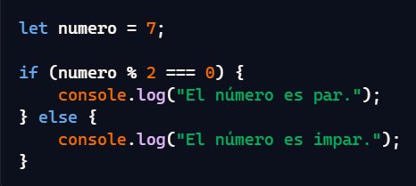

La práctica hace al maestro. La práctica es la clave para mejorar en cualquier habilidad.
La práctica es esencial para el aprendizaje y la mejora continua. Cuanto más practiques, mejor te volverás.
La práctica no solo ayuda a adquirir habilidades, sino que también fortalece la confianza en uno mismo.
La práctica es un proceso continuo. Siempre hay espacio para mejorar y aprender más.
La práctica puede ser divertida y gratificante. Encuentra maneras de disfrutar el proceso de aprendizaje.
Verifica si un número es par o impar
